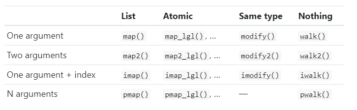

Appendix: Contents of Advanced R
Hadley Wickham’s book, Advanced R, has five parts:
- Foundations (Ch 1 - 8)
- Functional programming (Ch 9 - 11)
- Object oriented programming (Ch 12 - 16)
- Metaprogramming (Ch 17 - 21)
- Debugging, performance (using C++) (Ch 22 - 25)
Chapter 1 Introduction
Chapter 2 Names and values
- value has a name; name point to a value
- modify-on-copy
Chapter 3 Vectors
Vectors consist of - atomic vectors - logical - integer - double - character - lists: each item of a list is a “vector” - NULL (a special vector with length being 0)
Other objects are built upon vectors by adding one or more attributes
- matrix: vector +
dimattribute - data.frame: list +
namesattribute +row.namesattribute +class = data.frameattribute - factor: integer vector +
class = factorattribute +levelsattribute - Dates: double vector +
Dateattribute
Chapter 4 Subsetting
For an atomic vector, using [something]. Six ways (indicated by “something”):
a) a positive integer vector; b) a negative integer vector; c) 0; d) empty; e) a logical vector
f) a character vector
For a matrix, using [ , ]. Note using ‘[ , , drop = FALSE]’
For a list, using [] or [ , ]. To have one item, using [[]] or $.
Chapter 5 Control flow
if(condi) {}if(condi) {} else {}- for loop
Chapter 6 Functions
A function has three components: a) formula (arguments); b) body; c) environment
- A function is an object
- A function is often has a name; sometimes we use anonymous functions
- Functions can be put in a list
- How a function find its data
- where:
- current environment (“name masking”)
- if not, one level up
- when:
- fresh start (new environment will be created)
- dynamic look up
- where:
- Using
on.exitto restore old setting (e.g. working directory)
Chapter 7 Environment
Just a reference
Chapter 8 Conditions
This chapter is about using
stop()warning()message()
Chapter 9 Functionals
Base R:
apply()(for matrix)lapply()(for list; returns a list)vapply()(‘v’ is for verbose)
purrr package
Map family
map()+map_lgl()…map2()+map_int()…pmap()+pmap_dbl()…
Modify family
modify()modify2()
Walk family
walk()walk2()
The following table (taken from Hadley’s book) gives a good summary:

Reduce family
reduce()reduce2()
Chapter 10 Function factories
This is about writing a function to create many functions.
Chapter 11 Function operators
Special function factory, where the input is function(s). Just a reference.
Chapter 12 Base types
Objects in R can be
- Base
- S3
- S4
- R6 …
We can check with sloop::otype(an_obj).
There are 25 types in base R.
Chapter 13 S3
How to create an S3 class: writing three functions
- constructor function
- validator function
- helper function
Define a generic function and methods
my_generic <- function(x) {
UseMethod("my_generic")
}
my_generic.class_1 <- function(x) {
body
}
my_generic.class_2 <- function(x) {
body
}
my_generic.class_3 <- function(x) {
body
}
# using it
my_generic(x)